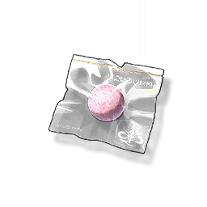

Resonators
Monsters
Weapons
Items
Sugar Pearl
Missions

The fourth token given by Jinhsi
The candy-like oral vaccine, the sweetness lingering on the tip of a child's tongue, has become a common memory of a generation of Jinzhou people overcoming the epidemic.